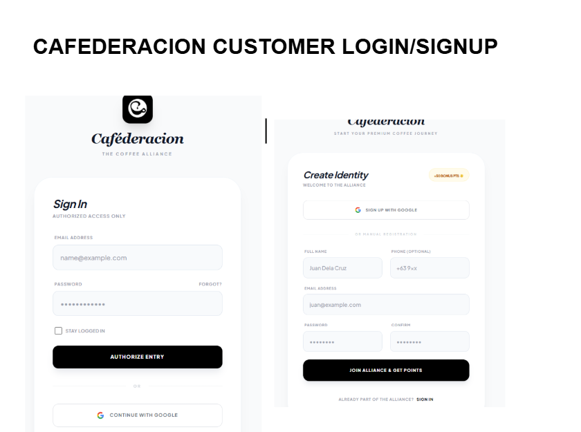
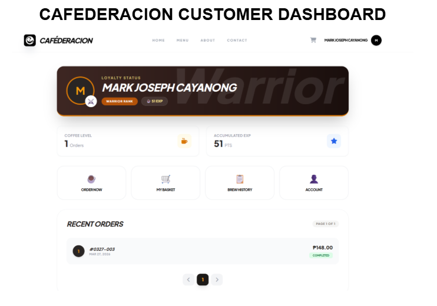
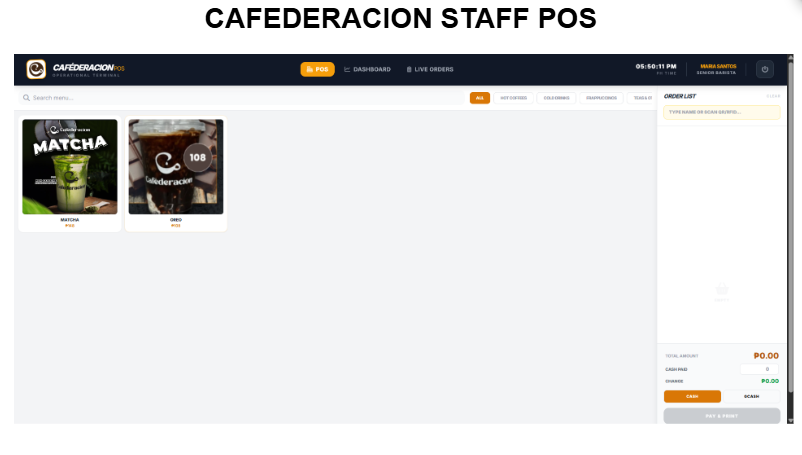
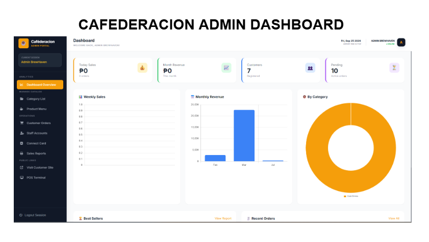

WEB APP
Caféderacion POS System with RFID
Caféderacion POS is a full-stack Point-of-Sale and inventory system built with Laravel, PHP, and MySQL. It centralizes order taking, tracking sales analytics, managing inventory stocks, and processing rapid cashless payments using integrated RFID cards.
GOAL
To build a fast, reliable POS system that speeds up coffee shop customer checkout times using RFID and eliminates manual sales tracking errors.
CHALLENGE
Coffee shops suffer during peak hours from long queues and inaccurate ingredient inventory counts when processing cash payments manually.
OUTCOME
A functional POS system with real-time inventory updates, instant tap-to-pay via RFID cards, automated daily financial reports, and zero delay on order queues.
Project gallery



